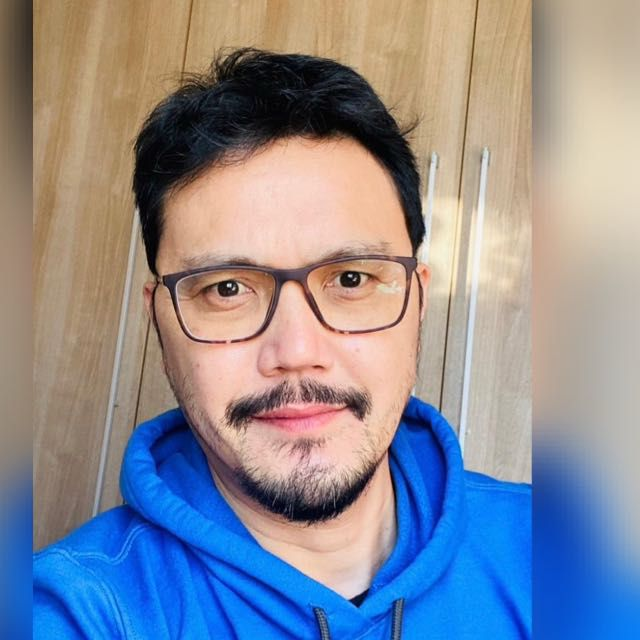
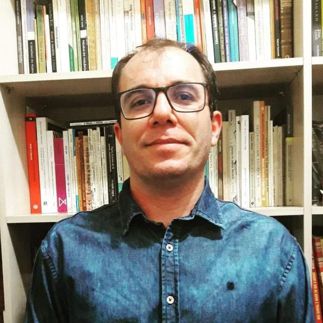
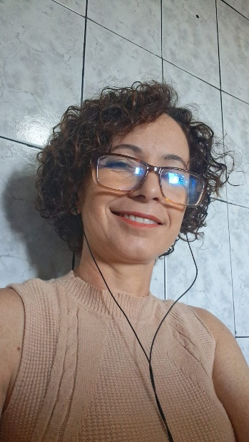
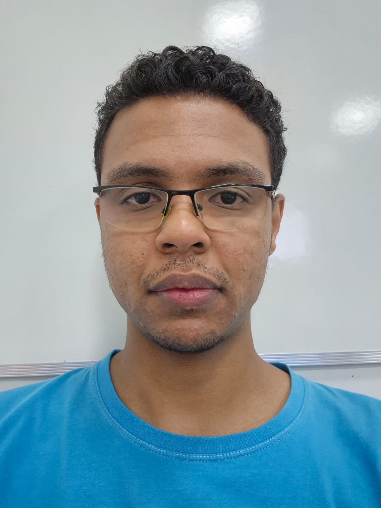
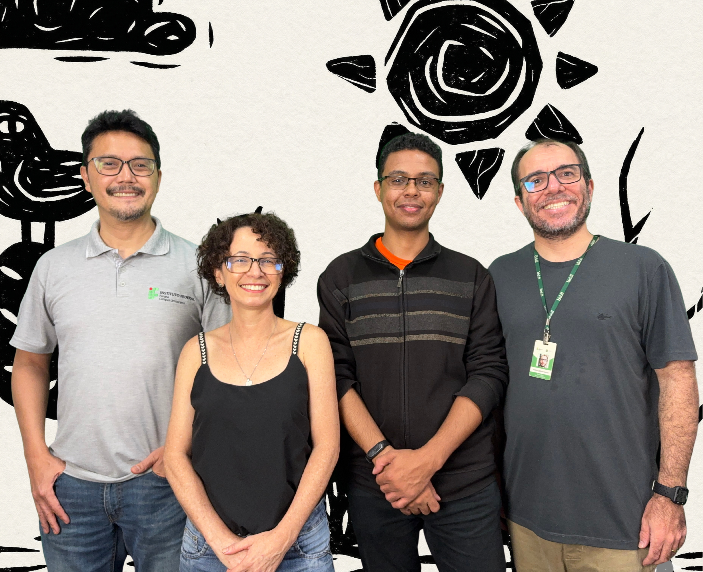

Apoio Institucional e Fonte Financiadora


O AstroCordel é uma iniciativa que une a magia e a simplicidade da literatura com os grandiosos mistérios da astronomia. Nosso objetivo é levar o conhecimento científico e a maravilhosa expansão cósmica de forma lúdica, poética e acessível a estudantes e curiosos de todas as idades.
Através de rimas, cantorias e recursos visuais empolgantes, quebramos a barreira do saber estrito e abrimos a abóbada celeste para a imaginação do povo, integrando ferramentas modernas e tradições centenárias da nossa cultura popular.

O Prof. Otávio Akira Sakai é docente do Instituto Federal do Paraná (IFPR) – Campus Umuarama e Doutor em Física pela Universidade Estadual de Maringá (UEM). Com uma trajetória marcada pela interdisciplinaridade, atua na interface entre Física e Química, desenvolvendo pesquisas voltadas à nanotecnologia e à sustentabilidade.
Seus trabalhos concentram-se na síntese verde de nanopartículas metálicas, nanoemulsões e biomateriais, com aplicações que vão da saúde ao meio ambiente e à agricultura. Essa abordagem busca não apenas inovação científica, mas também soluções acessíveis e alinhadas às demandas contemporâneas por tecnologias sustentáveis. Além da pesquisa, o professor também se destaca pela atuação em projeto de extensão, especialmente por meio do projeto ASTROCORDEL. A iniciativa integra ciência e cultura ao abordar conceitos de astronomia básica de maneira criativa, acessível e contextualizada.
Voltado à divulgação científica, o projeto busca aproximar o conhecimento acadêmico da sociedade, utilizando linguagens alternativas que facilitam a compreensão e despertam o interesse do público sobre astronomia. Nesse contexto, o ASTROCORDEL contribui não apenas para a popularização da ciência, mas também para o fortalecimento do processo educativo, promovendo uma aprendizagem mais significativa, inclusiva e envolvente.

Professor EBTT - Língua Portuguesa e Espanhola - do IFPR Campus de Umuarama. Mestre e Doutor em Letras pela UNIOESTE. O trabalho docente e de pesquisador, além da ênfase nas línguas e nas literaturas brasileira e hispano-americana, tem interesse ainda em temas vinculados às culturas indígena (guarani), afro-brasileira (música) e hispano-americana (música).
Em 2021 publicou pela Editora IFPR o livro de teoria e crítica “Vou contar uma história: questões de literatura e leitura da forma cordel”. Em parceria com o Prof. Dr. Otávio Akira Sakai, desenvolveu e atuou no projeto de extensão “AstroCordel: a literatura e o Universo no ensino de Ciências”.

Shirlei Herculano da Silva Sarraff, 48 anos, natural da cidade de Umuarama, graduanda de licenciatura em Química do IFPR - Campus Umuarama. Filha de pai músico, de origem alagoana, e de mãe mineira também de família de músicos. De certa forma está ligada à arte e cultura nordestina, por influência familiar.
Trabalha na área da engenharia de produção de moda (modelista), investindo no momento num sonho de infância sobre o conhecimento da química e da docência.
Admiradora da área de Astronomia.

Eude Santana Borges é técnico em Informática pelo IFPR e atualmente graduando em Tecnologia em Análise e Desenvolvimento de Sistemas (TADS), também pela mesma instituição. Atua como professor de Programação na rede estadual de educação e como instrutor na Ctrl+Play, dedicando-se a tornar a tecnologia uma ferramenta acessível, criativa e significativa para seus alunos.
Entusiasta das áreas científicas, encontra na astronomia uma de suas principais inspirações, um campo onde curiosidade e imaginação caminham lado a lado. Acredita que o conhecimento, assim como o Universo, deve ser explorado, compartilhado e vivenciado.
O Projeto AstroCordel surge desse encontro entre ciência e cultura, propondo a tradução do cosmos em uma linguagem simples, ritmada e carregada de identidade, aproximando o conhecimento científico à tradição popular.

A união de professores e estudantes é a base construtora do AstroCordel. Com muito orgulho, trabalhamos lado a lado no desenvolvimento das rimas, das avaliações dos conceitos físicos, da elaboração de cantorias e do design das xilogravuras da plataforma, mantendo viva a paixão pelo céu e pela nossa literatura.
Apoio Institucional e Fonte Financiadora